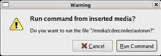
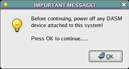
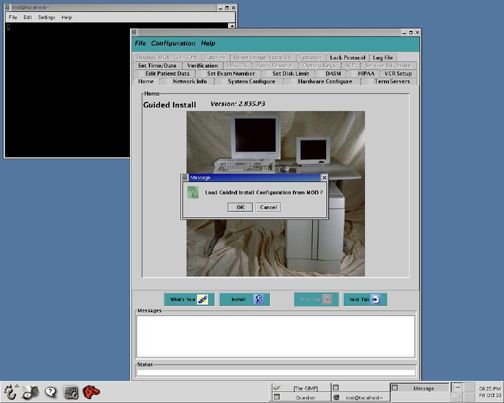
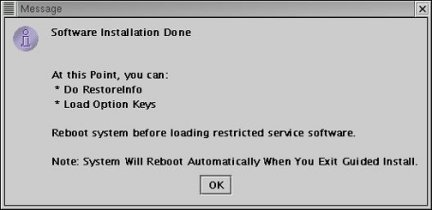
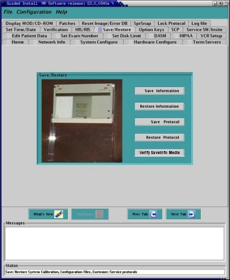
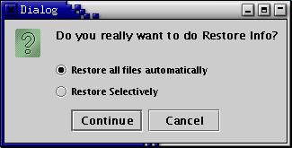
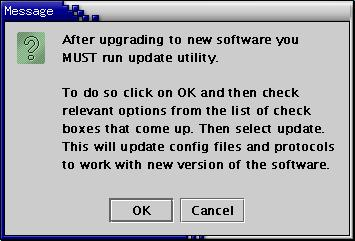

Operating Documentation
Direction 5440001-3, Rev# 6
Signa HDxt Service Methods
Module Version 4.0, Version Date 6/3/10
Operating Documentation |
| Required Persons | Preliminary Reqs | Procedure | Finalization |
|---|---|---|---|
| 1 | 5 mins | 45 mins | Not Applicable |
| Item | Qty | Effectivity | Part# | Manufacturer | |
|---|---|---|---|---|---|
| MR Applications CD-ROM | 1 | - | - | - | |
| Condition | Reference | Effectivity |
|---|---|---|
Operating System Load was completed. The concept “Load from Warm” does not exist for this system. Do not attempt to short cut the process by just loading MR Applications. | - | - |
Insert the MR Applications CD into the disk drive, and the CD will auto boot. When the message shown in Illustration 1 displays, click [Run Command].
Illustration 1: Run Command Pop-Up

Click [OK] after confirming that the DASM (if applicable) was powered Off. (See Illustration 2.)
Illustration 2: DASM Off Message

Wait for the system to reboot. It will probe hardware, partition the hard drives, and then reboot.
When a message dialog box in Illustration 3displays, click [OK] to close it.
After the system reboots, the Linux desktop displays and the Guided Install screen (shown in Illustration 3) automatically launches about two minutes later.
Illustration 3: Guided Install Screen

Insert the SaveInfo MOD into the MOD drive, and click [OK] when the message (shown in Illustration 4) displays.
Illustration 4: Load Guided Install Configuration

Once the GI Configuration load is complete, the Guided Install Verification tab (shown in Step ) displays.
If the SaveInfo was performed on an 11.1 system that generated an IIS key, the Verification tab should activate the [Install Software] button shown in Step .
If this button is not active, address any failing issues that exist before proceeding. (For help using Guided Install, see Host Reconfiguration.)
The MGD Term Server MAC address can be found on the module as shown in Illustration 5
| NOTE: | The system will ask to enable High Order Shim from Guided Install. Only enable the High Order Shim if the site is a TwinSpeed equipped with the High Order Shim option. |
Illustration 5: MGD Term Service MAC Address Location

Verify that the MR Applications CD is inserted and click [OK]. (See Illustration 6.) MR Applications takes about 5 minutes to load.
Illustration 6: Verify Insertion of MR Applications CD

Once the software installation is complete, remove the MR Applications CD from the disk drive and click <OK>. (See Illustration 7.)
Illustration 7: Software Installation Completed

Insert the SaveInfo MOD into the MOD drive. From the Guided Install, select the Save/Restore tab. Click the [Restore Information] button shown in Illustration 8.
Illustration 8: Save/Restore Tab

Select [Restore all files automatically], and press [Continue] shown in Illustration 9.
Illustration 9: Restore Selections

When it finishes and the message shown in Illustration 10displays, click <OK> to run Update Utility.
Illustration 10: Update Utility Pop-Up

When the message displays asking, Do you want to quit the tool, click <Yes>.
When the message, Log file (restore.log) has been created in /usr/g/service/log directory displays, click <OK>.
To restart the system, select [File] and [Quit], and click [Yes] when asked to confirm. (The system will reboot, and all changes made during the restore process will be set.)
Insert the MOD with the saved protocols.
Select the Save/Restore tab, and click the [Restore Protocol] button.
To exit Guided Install, select [File] then [Quit], and answer [Yes]. (If any error conditions still exist, Guided Install will force a fix of the errors or the changes will not be saved.)
To log out of the system, right click on the desktop and select [Logout], and click [Yes] when the next prompt displays.
Log back in as user: sdc and password: adw2.0.
Reconnect the DASM if required.
Restore YP Networking if required.